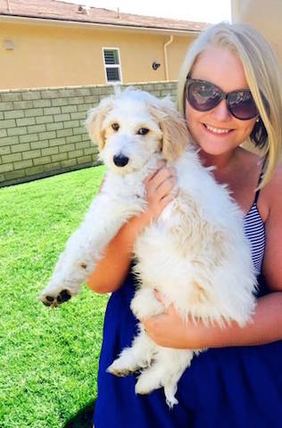

Carolyn Mullen

Frequently Asked Questions
- 1. What is Carolyn's full name?
- Carolyn Clare Diane Mullen
- 2. What is Carolyn's nickname?
- Many of her close friends call her Lyn, her dad calls her Carolina and her stepdad calls her Lil C!
- 3. When and where was Carolyn born?
- Carolyn was born on August 2nd, 1993 in Summit, New Jersey.
- 4. How many sibilings does Carolyn have?
- She has a total of 4 sibilings, 3 brothers and 1 sister! Carolyn is the youngest!
- 5. What is Carolyn's favorite color?
- Black, nothing better then a blonde in black.
- 6. What is Carolyn's starbucks order?
- Before 2pm she will order a Venti Iced Americano with Soy Milk. After 2pm and when in season Carolyn orders a Venti Iced Peach Green Tea Lemondae!
- 7. What was Carolyn's major her freshman year?
- She came to SJU as an education major with the intention to become a kindergarten teacher. It wasn't until her sophomore year that she decided Communications would be a better fit.
- 8. What are Carolyn's plans for post grad life?
- Carolyn plans to move to California and work in the marketing/ public relations field.
- 9. What is Carolyn's favorite movie?
- The Devil Wears Prada!
- 10. Why does Carolyn have blonde and brown hair?
- Carolyn's brown hair is her birthmark. Her birthmark starts on her left cheek and extends into her hair and therefore changing the hair pigmentation.